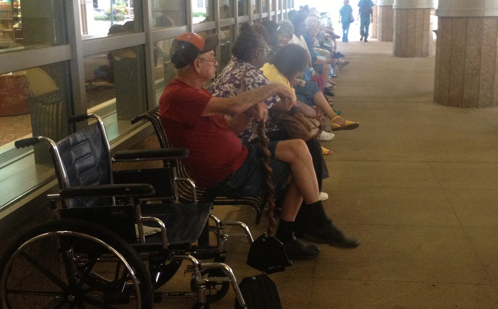
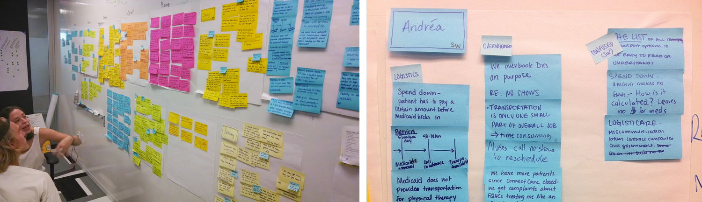
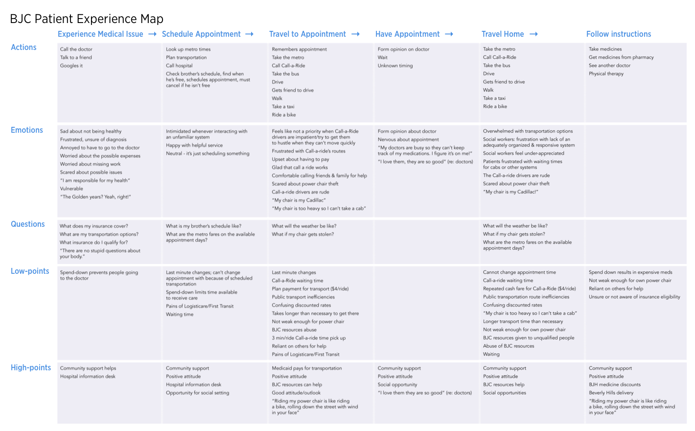
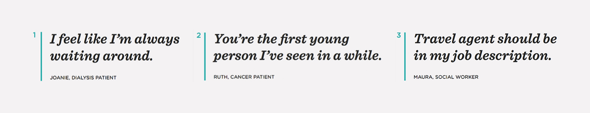
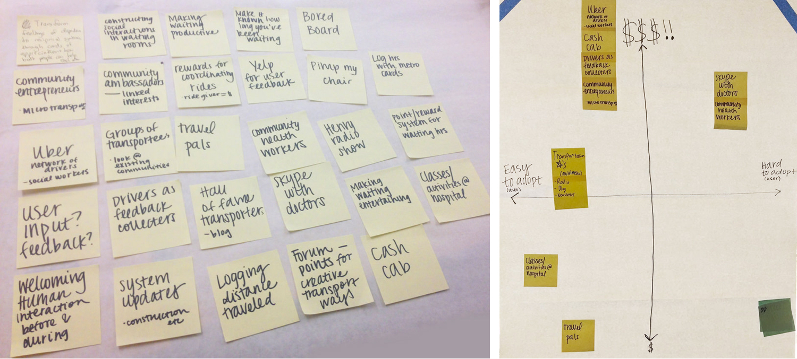
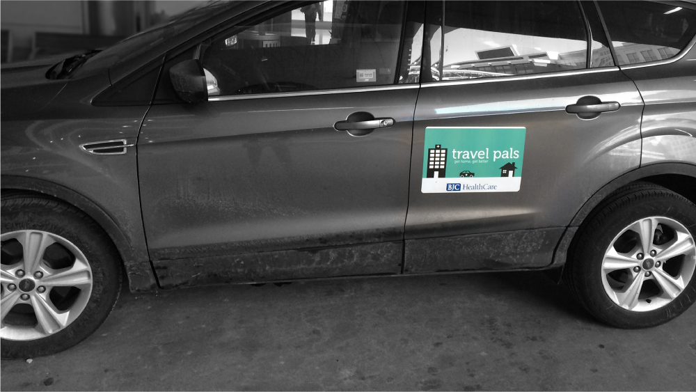

Why
Chronic patients at BJC Healthcare struggled to make their appointments, which had negative effects on their health outcomes. Preliminary research pointed to transportation issues, so the BJC Center for Innovation challenged a group of design students to research and rethink the experience.
We started with in-person interviews with social workers and patients at BJC hospitals. We synthesized our interview notes and created patient profiles.
Using what we learned from the interviews, we categorized the patient experience into seven steps and mapped out the actions, emotions, questions, high/low points.
The experience map helped us realize that the majority of the negative parts of the patient experience were at the end. We reframed our project to focus on the end of the patient experience, with the hypothesis that people will be more confident getting to their appointment if they know they'll have a secure ride home.
We identified three main pain points of the last part of the patient experience and focused our project around alleviating these concerns.
We ideated potential solutions to the pain points and mapped five of them on axises of cost and ease of adoption.
The most feasible solution was Travel Pals, a program that connects social work students and chronic patients through rides home from the hospital.
We pitched the idea to BJC and they liked it so much they decided to build a working prototype. I designed a graphic they put on the car that took real patients home.
This project was a collaboration with Alexis Turim and Patrick Buggy. Car outline designed by Mourad Mokrane via the Noun Project. Video illustrations inspired by Adrian Johnson. Thanks to our mentors and partners Erica Kochi, Doug Powell, Maggie Breslin, Gaby Brinks, Karolina Michniewicz and the BJC Center for Innovation team.